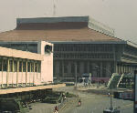

呂清夫 撰文

台北的交通似乎替行人、替學童考慮不多，行人學童常有行不得也之苦。近日據聞松山機場有玩具、家電大展，民眾擠得水洩不通，我真為那一帶的行人捏一把冷汗，因為機場前面幾乎看不到一個斑馬線，車子又快。如果從富錦街口下了公車，從紅磚道往機場走，行人真是走投無路，因為紅磚道有頭沒尾，而機場前面的馬路就像水上樂園中的人工河道一樣，路窄而彎，車子川流不息，沒有號燈、沒有斑馬線，行人根本無法穿越，好像高速公路一樣。問題是這樣的「高速」路為何要與紅磚道連在一起？為何機場旁邊又設置大型展覽場？簡直是與行人過不去，後來我終於想通了，來客必須開車，無車免談！那個新生公園也是，由於設在車水馬龍的高架橋下，大路縱橫交錯，沒有明顯的斑馬線，行人隔著馬路，望著公園，真不知如何過到彼岸。還是一樣，只怪自己沒有開車，因為前往公園也是無車免談。陽明山公園也差不多，大好的馬路只供轎車長驅直入門口，公車則被拒於數里之外，公車乘客下車之後，只好行軍。至於台北站前的陸橋實為不折不扣的「天橋」，因為奇高奇長，又無頂篷可蔽風雨，老弱婦孺只有自求多福。不僅此也，將來這一帶行人也可能被「請」到地下，因為有人建議從台北車站到小南門之間，據說又要造一條長達三公里的地下街（可怕！）好讓地面更方便於開車。儘管學者曾說，使用都市的地面是市民的基本權利，但是現階段的行人還是不得不上天下地的疲於奔命。因之我們可以看出，整個都市規畫似乎都在看重開車的方便，似乎都在鼓勵大家買車。事實上像台北這種毫無停車場觀念的城市，嚴格地說，根本沒有資格增加小汽車。同時台北市區也不大，開車未必更加方便，即使在東京那種比台北大的地方，市區也很少人開小汽車，因為那樣反而浪費時間。他們寧可坐公車或地下鐵，即使公司的主管也不例外，大家不會認為坐公車寒酸，同時汽車在他們也不是什麼稀奇品，因為價錢便宜，沒什麼好炫耀，至於進口車則很少見，因為他們對自己有信心。不曾擁有汽車的人可能會覺得汽車稀奇，但是一度擁有以後可能會覺得汽車也不方便，甚至覺得汽車無異「氣」車，不開也罷。我想台北的小汽車成長到整個城市都是停車場的時候，大家可能會視開車為畏途。在與海爭地方荷蘭，馬路竟留有自行車道，路旁綠意盎然，景色如畫。民眾更有共識，如要我們的環境與地球更為乾淨，就不能汽車至上，而要提倡腳踏車。人口稠密的阿姆斯特丹也在快車道旁，勻出自行車道，車道平順，使老人家都可以輕騎上路。至於腳踏車更是隨處可以租到，行人真是得其所哉。在地窄人稠的日本，也是大街小巷都留有自行車道，東京都不例外，騎單車和坐公車一樣，不被視為寒酸，太學教授騎單車上路者不乏其人，各地車站更設自行車停車場。日本筑波學園都市更把人行道、自行車道高架化，汽車都在橋下穿梭，人車井水不犯河水。一個學童從家�堨X門，不管他是走路還是騎車，不論他去學校或去公園，他都可以一部車子都碰不到，而直達目的地。這看來有點神話，其實是二○O年代的「包浩斯」早已想出，七○年代的日本業已實現的行人王國。其貫這也是一個未來都市，因為目前交通流量很小，設施建好了是預備幾十年後使用的。每次碰到台北的行路難，或者汽車的烏氣，我就不由得想起人家的行人、學童何其幸運。當初的台北如果有一點未來的前瞻，何至於像今天這樣，整個城市彷彿是個大違建，面對台北的橫七豎八，一個馬來西亞僑生告訴我，現在的台北連吉隆坡都不如了，你說氣不氣人？原載1990.2.1.自立早報，收入1994年，呂清夫著「現代都市叢林派」